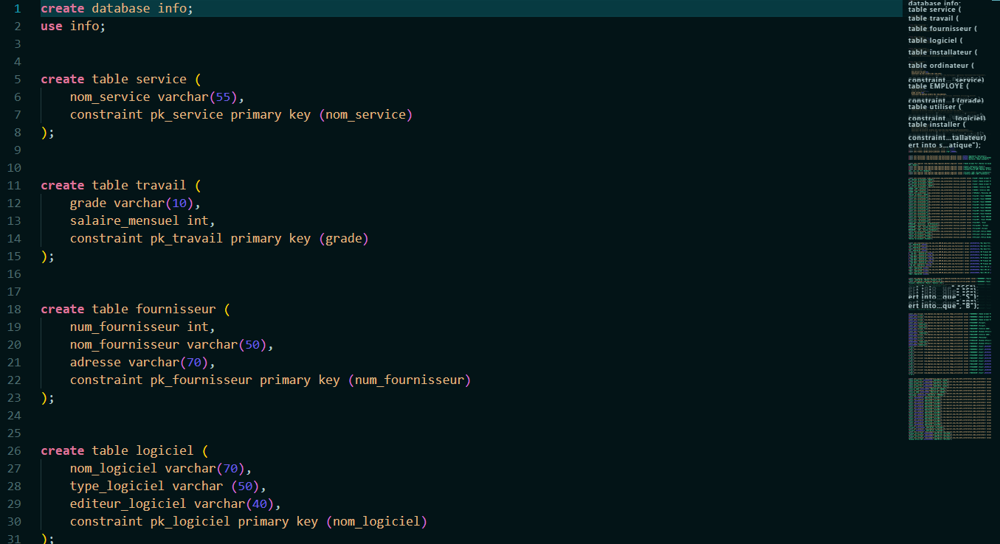
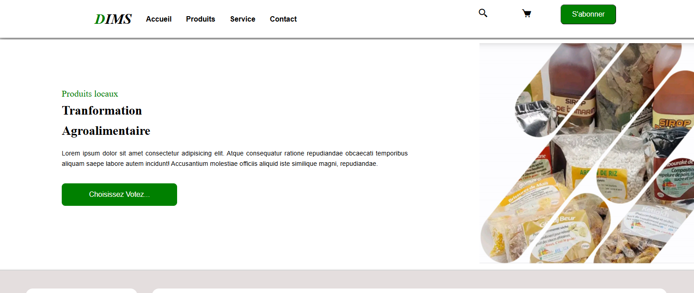
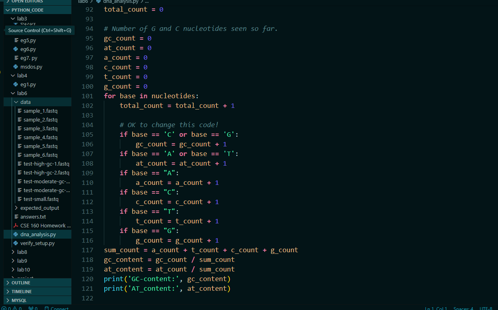

My Portfolio

Database Management System for manage an organization's information.
This project aims to design and implement a relational database to manage the information of an organization, including services, employees, computers, software, suppliers and intallers. The database will track the relationships betwenn these entities, particularly the usage of computers and software on computers.

E-commerce platform for local product transformation.
This project is an e-commerce platform designed to promote and sell locally transformed products, such as artisanal foods and handmade items. It connects local producers with consumers, providing an easy-to-use online shopping experience while supporting local business.

Genomic Data Analysis Using Python.
This project focuses on analyzing genomic data using Python to identify patterns in DNA sequences. It involve processing large datasets, applying statistical techniques to understand genomic variations.